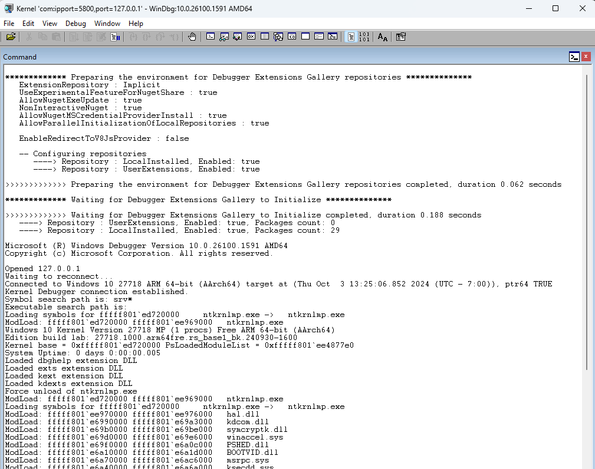
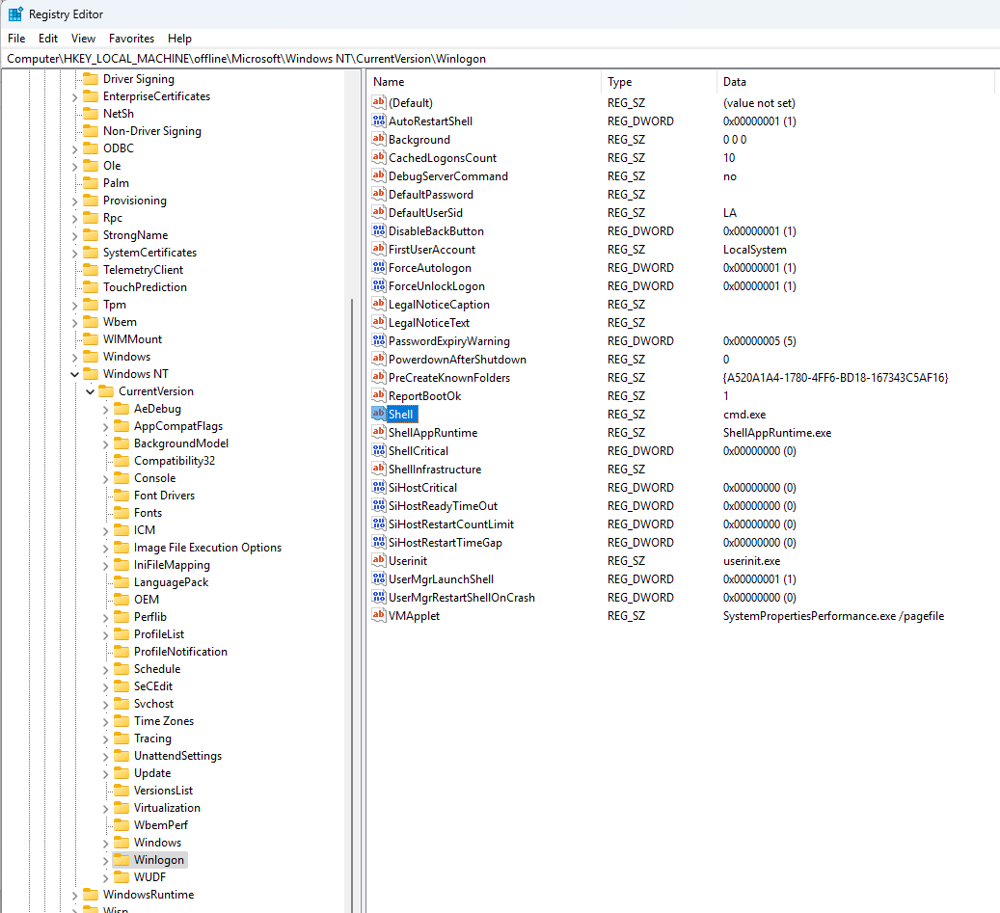

QEMU Setup Guide
Overview
This document provides details on how to setup QEMU, boot windows image and enable windbg. Next it covers details on how to compile a UEFI image for QEMU and modify ACPI content.
QEMU Setup
This section covers how to setup QEMU and boot windows image. We use QEMU as a reference for developing features that are not yet fully supported in hardware. This also gives us a HW agnostic platform that any SV or OEM can use for development.
Downloading and building QEMU
The first step to setting up your system and validating you can boot to UEFI shell. The following has been validated with Ubuntu 22 under WSL. For full instructions see the following link:
This also depends on rustup being installed
QEMU build and setup
Note this uses Version 9.0.0 tip QEMU and other versions have varying issues. Building the emulator takes some time depending on your computer.
sudo apt-get install git libglib2.0-dev libfdt-dev libpixman-1-dev zlib1g-dev ninja-build qemu-utils libudev-dev ncurseslib-dev
wget https://download.qemu.org/qemu-9.0.0.tar.xz
tar xf qemu-9.0.0.tar.xz
cd qemu-9.0.0
./configure --enable-vnc
make
sudo make install
Running QEMU with Windows
You can download the Validation OS ISO which is stripped down version of the OS and boots much faster in QEMU Validation OS Windows 11
When you mount the ISO you will have ValidationOS.vhdx and ValidationOs.wim files. Generally we work with virtual disk files (vhdx) in qemu. Copy the ValidationOS.vhdx file to your WSL file share and convert this to qcow2 image that is used by qemu.
qemu-img convert -p -O qcow2 ValidationOS.vhdx winvos.qcow2
You will need to modify Platforms/QemuSbsaPkg/Plugins/QemuRunner/QemuRunner.py to load your windows disk image.
windows_image = env.GetValue("QEMU_WINDOWS_IMAGE")
if(windows_image != None):
logging.log(logging.INFO, "Mapping windows image to boot: " + windows_image)
args += " -hda " + windows_image
Now you can just port the environment variable to point to your windows image and it will load and boot windows rather than stopping at shell
export QEMU_WINDOWS_IMAGE=/home/user/qemu/winvos.qcow2
You should now be able to boot to windows and connect to the VNC session using your favorite VNC viewer at 127.0.0.1:5900
Windbg Setup for QEMU
Enabling Windbg
If Windows doesn't boot properly on QEMU you are basically stuck wondering what is happening with no output after bootmgr starts there will be no further update in the serial port. To debug windows drivers and boot you will need to enable debugger in your image and redirect your serial port output.
To enable KDCOM in your windows image you can mount your WinVOS.vhdx file but just double clicking on it in windows and it will mount the windows drive. It will not allow you to mount the EFIESP partition which has your BCD configuration so you will manually need to do this from administrator command prompt
mountvol list
\\?\Volume{6db5162d-2579-4177-a1a5-93ef900a229e}\
E:\
\\?\Volume{836aef00-39f3-4032-9859-edd5830c5bbf}\
*** NO MOUNT POINTS ***
\\?\Volume{c587fa46-aec7-40b5-ae44-610e51124aa2}\
*** NO MOUNT POINTS ***
Normally the EFIESP volume is the last one listed here, but if it fails to mount the one try the other one. It will be one of the volumes without a mount point. Make sure the location you try to mount it the folder must exist already.
mountvol d:\temp\mount \\?\Volume{c587fa46-aec7-40b5-ae44-610e51124aa2}\
cd d:\temp\mount\EFI\Microsoft\Boot
bcdedit /store BCD /enum all
bcdedit /store BCD /set {default} debug on
bcdedit /store BCD /dbgsettings serial debugport:1 baudrate:115200
mountvol d:\temp\mount /d
Don't forget to eject or dismount the VHDX after you've unmounted the EFIESP partition. If you want to debug early boot process because it is not making it into NTOS you can enable bootdebug as well
bcdedit /store BCD /set {globalsettings} bootdebug yes
After modifying your vhdx be sure to convert to qcow2 format again using qemu-img and copy to the location that qemu is loading the image from.
You will also need to change your serial output port as part of qemu command line, otherwise windbg can't connect with KDCOM through stdio. Update the -seral to use a localhost port which will get exposed outside of WSL
-serial tcp:127.0.0.1:5800,server,nowait
Note: Each time you restart the qemu the port will go away and you need to restart windbg after qemu has started otherwise it will not open the port properly after. To connect to your port with windbg you will need to run from the command line using the following:
windbg -k com:ipport=5800,port=127.0.0.1 -v
Now when Windows starts you will see it connect with Windbg and you can debug as you normally would.

Debugging QEMU with GDB
When debugging in UEFI, secure world, or when system isn't responding you will often find yourself needing a GDB connection to the device. QEMU has built in support for GDB interface and makes it very easy to debug with GDB.
From the qemu command line just add the following option
-gdb tcp::1234
Now after your system starts or is in the state you want to connect you can use
gdb-multiarch
(gdb) set debug aarch64
(gdb) target extended-remote localhost:1234
For more details debugging with GDB or using Windbg with GDB you can read the following documents. GDB Debugger
Compiling UEFI for QEMU
Downloading and Building Image
The following steps will install required packages, setup and build UEFI image for QemuSbsaPkg which is ARM64 image.
git clone https://github.com/microsoft/mu_tiano_platforms.git
cd mu_tiano_platforms
git submodule update --init --recursive
sudo apt-get install python3
sudo apt-get install python3.10-venv
python3 -vm venv .venv
source .venv/bin/activate
sudo apt-get install python-is-python3
sudo apt-get install python3-pip
pip install -r pip-requirements.txt --upgrade
sudo apt-get install -y build-essential git nasm wget m4 bison flex uuid-dev unzip acpica-tools gcc-multilib
sudo apt-get install gcc-aarch64-linux-gnu
sudo apt-get install mono-complete
sudo apt-get install mtools
rustup override set nightly
cargo install cargo-make
cargo install cargo-binutils
export GCC5_AARCH64_PREFIX=/usr/bin/aarch64-linux-gnu-
stuart_setup -c Platforms/QemuSbsaPkg/PlatformBuild.py TOOL_CHAIN_TAG=GCC5
stuart_update -c Platforms/QemuSbsaPkg/PlatformBuild.py TOOL_CHAIN_TAG=GCC5
stuart_build -c Platforms/QemuSbsaPkg/PlatformBuild.py TOOL_CHAIN_TAG=GCC5
Running QEMU
After image has been built you can run the generated image using the following command. This assumes you already have qemu-system-aarch64 compiled and installed on your system.
stuart_build -c Platforms/QemuSbsaPkg/PlatformBuild.py TOOL_CHAIN_TAG=GCC5 --FlashOnly
This will run to UEFI Shell> and your QEMU is working and running
ACPI Customization
Adding Test Content to ACPI
ACPI is compiled as part of the MU_TIANOCORE image. To update ACPI you simply need to modify the tables found here in the UEFI build.
mu_tiano_platforms/Platforms/QemuSbsaPkg/AcpiTables
Update the dsdt.asl in this folder to include your ACPI content in this case test.asl
...
#include "test.asl"
//
// Legacy SOC bus
//
Device (SOCB) {
Name (_HID, "ACPI0004")
Name (_UID, 0x0)
Name (_CCA, 0x0)
Recompile mu UEFI and it will pick up these ACPI changes in the QEMU_EFI.fd image when you boot QEMU.
Note: ACPI is provided as part of the firmware image so change ACPI does not require you to change your windows image.
Modifying Windows Image
Injecting Drivers into Vhdx Windows Image
Injecting drivers and registry entries into your VHDX image is straight forward using DISM. You will need the driver binaries and inf file to install the driver.
-
Mount the VHDX by double clicking on it and noting the drive letter that is mounted
-
Inject your driver using DISM
dism /Image:e:\ /Add-Driver /Driver:d:\drivers\testdrv -
This will execute the installation steps in the INF including copying your driver into the mounted image and updating the registry. Make sure the operation completes successfully. If you have multiple drivers you can use the /Recurse option to install all inf files.
-
Make sure to cleanly unmount your VHDX drive.
-
Convert your VHDX to qcow2 image using qemu-img and run your new windows image with QEMU.
qemu-img convert -p -O qcow2 ValidationOS.vhdx winvos.qcow2
Injecting Executables and Autorun
To inject executable content you can simply click on the VHDX file to mount it and make a folder and copy content to the device. If you are trying to overwrite existing system content you may need to make yourself the owener and allow overwrite permissions. Sfpcopy can also be used to accomplish secure copy.
takeown /f <filename>
icacls <filename> /grant everyone:f
copy <localfile> <destfile>
To automatically run an executable in WinVOS you can edit the registry in the VHDX.
- Mount the VHDX image by double clicking on it and noting the drive letter.
- Run regedit as administrator.
- Select the root of HKLM.
- File -> Load Hive and browse to your mounted drive under e:\windows\system32\config\SOFTWARE
- Name the mount location "Offline"
- Browse to the following key
Computer\HKEY_LOCAL_MACHINE\offline\Microsoft\Windows NT\CurrentVersion\Winlogon - Modify the "Shell" REG_SZ entry which just runs
cmd.exeby default. - After you've modified the key be sure to select the root of the offline folder and select File -> Unload Hive
- Unmount your VDHX file to make sure it is saved
- Convert windows image to qcow2 and load in QEMU
